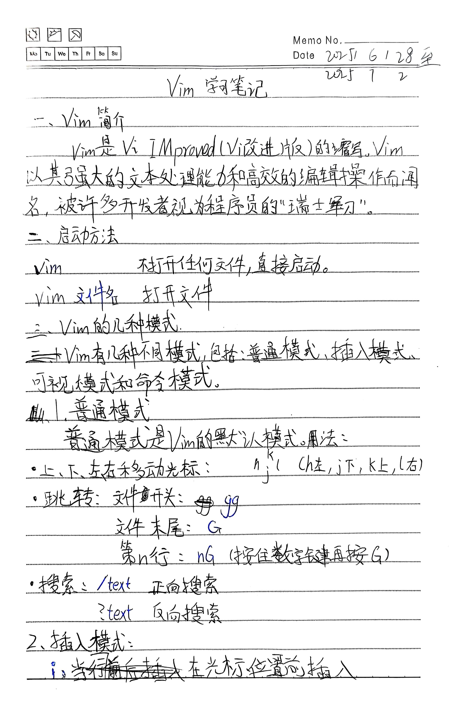
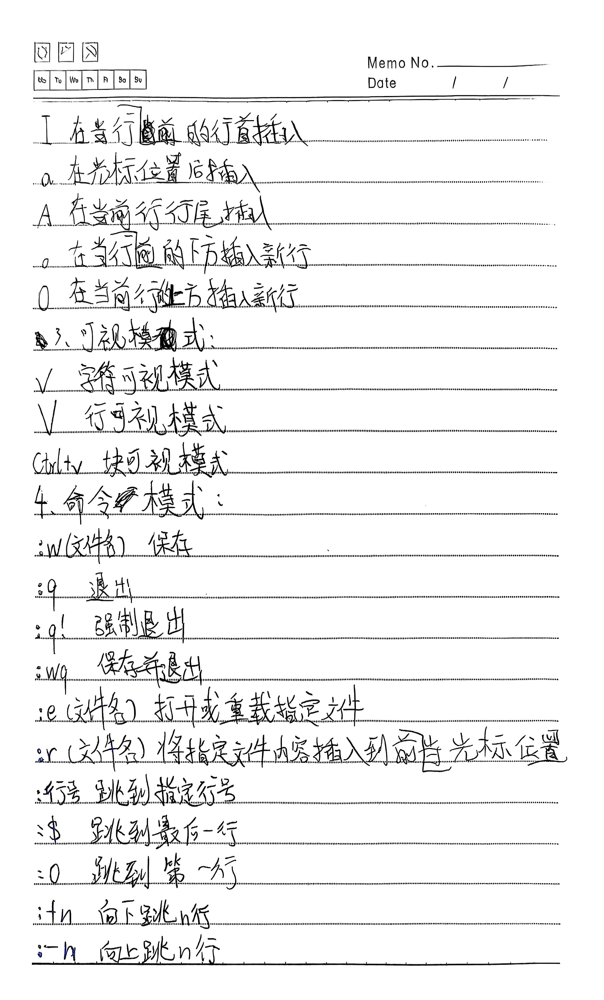
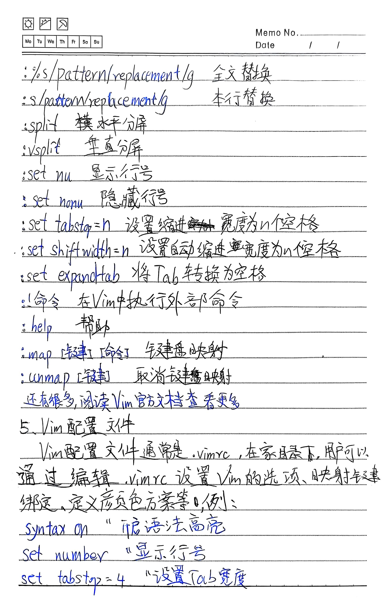
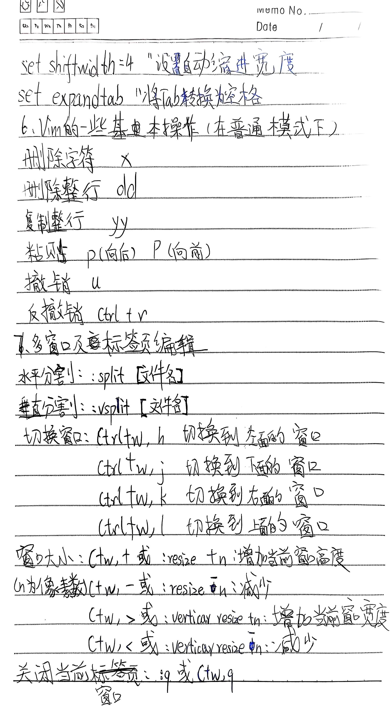
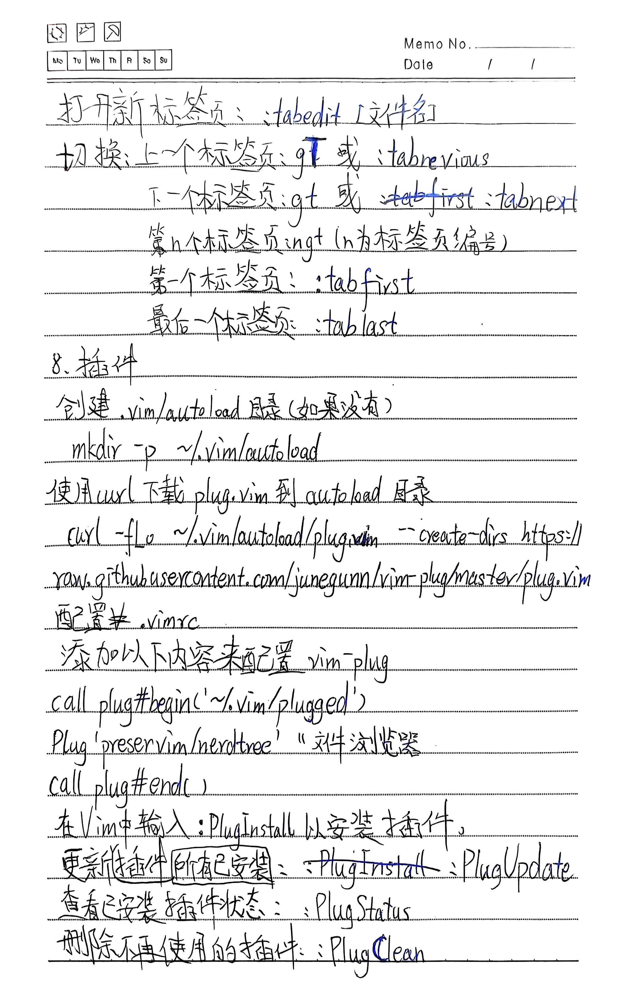
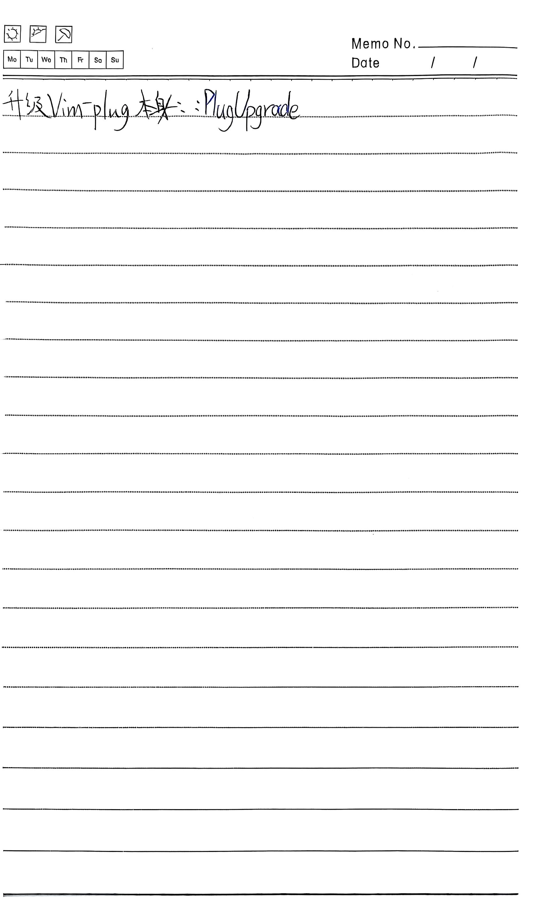

一、Vim简介
Vim是 Vi IMprovvim (Vi改进版)的缩写，Vim以其强大的文本处理能力和高效的编辑操作而闻名，被许多开发者视为程序员的"瑞士军刀"。
二、启动方法
vim不打开任何文件，直接启动。vim 文件名打开文件。
三、Vim的几种模式
Vim有几种不同模式，包括：普通模式、插入模式、可视模式和命令模式。
1、普通模式
普通模式是Vim的默认模式。用法:
- 上、下、左、右移动光标
h(左),j(下),k(上),l(右)- 跳转
- 文件开头:
gg - 文件末尾:
G - 第n行:
nG(按住数字键再按G) - 搜索
/text正向搜索?text反向搜索
2、插入模式
i- 在光标位置前插入
I- 在当前行行首插入
a- 在光标位置后插入
A- 在当前行行尾插入
o- 在当前行的下方插入新行
O- 在当前行的上方插入新行
3、可视模式
v- 字符可视模式
V- 行可视模式
Ctrl+v- 块可视模式
4、命令模式
在 Vim 中输入 : 进入命令行模式。
:w(文件名)- 保存
:q- 退出
:q!- 强制退出
:wq- 保存并退出
:e(文件名)- 打开或重载指定文件
:r(文件名)- 将指定文件内容插入到当前光标位置
:行号- 跳到指定行号
:$- 跳到最后一行
:0- 跳到第一行
:+n- 向下跳n行
:-n- 向上跳n行
:%s/pattern/replacement/g- 全文替换
:s/pattern/replacement/g- 本行替换
:split- 水平分屏
:vsplit- 垂直分屏
:set nu- 显示行号
:set nonu- 隐藏行号
:set tabstop=n- 设置缩进宽度为n个空格
:set shiftwidth=n- 设置自动缩进宽度为n个空格
:set expandtab- 将Tab转换为空格
:!命令- 在Vim中执行外部命令
:help- 帮助
:map [按键][命令]- 键盘映射
:unmap [按键]- 取消键盘映射
还有很多，阅读Vim官方文档查看更多。
5、Vim配置文件
Vim配置文件通常是.vimrc，在家目录下。用户可以通过编辑.vimrc设置Vim的选项、映射按键绑定、定义颜色方案等。例:
syntax on " 语法高亮
set number " 显示行号
set tabstop=4 " 设置Tab宽度
set shiftwidth=4 " 设置自动缩进宽度
set expandtab " 将Tab转换为空格6、Vim的一些基本操作(在普通模式下)
x- 删除字符
dd- 删除整行
yy- 复制整行
p- 粘贴 (向后)
P- 粘贴 (向前)
u- 撤销
Ctrl + r- 反撤销
7、多窗口及标签页编辑
窗口操作
- 水平分割
:split [文件名]- 垂直分割
:vsplit [文件名]- 切换窗口
Ctrl+w,h: 切换到左面的窗口Ctrl+w,j: 切换到下面的窗口Ctrl+w,k: 切换到上面的窗口Ctrl+w,l: 切换到右面的窗口- 调整窗口大小
Ctrl+w+或:resize +n: 增加当前窗口高度Ctrl+w-或:resize -n: 减少当前窗口高度Ctrl+w>或:vertical resize +n: 增加当前窗口宽度Ctrl+w<或:vertical resize -n: 减少当前窗口宽度- 注意:
n为行数或列数，不是像素数。 - 关闭当前窗口
:q或Ctrl+w,q
标签页操作
- 打开新标签页
:tabvimit [文件名]- 切换标签页
- 上一个标签页:
gT或:tabprevious - 下一个标签页:
gt或:tabnext - 第n个标签页:
ngt(n为标签页编号) - 第一个标签页:
:tabfirst - 最后一个标签页:
:tablast
8、插件
以 vim-plug 为例。
- 创建
~/.vim/autoload目录(如果没有):mkdir -p ~/.vim/autoload - 使用curl下载plug.vim到autoload目录:
curl -fLo ~/.vim/autoload/plug.vim --create-dirs https://raw.githubusercontent.com/junegunn/vim-plug/master/plug.vim - 配置
~/.vimrc，添加以下内容来配置vim-plug:call plug#begin('~/.vim/pluggvim') Plug 'preservim/nerdtree' "文件浏览器 call plug#end() - 在Vim中输入
:PlugInstall以安装插件。
常用vim-plug命令
:PlugInstall/:PlugUpdate- 安装/更新所有已安装的插件
:PlugStatus- 查看已安装插件状态
:PlugClean- 删除不再使用的插件
:PlugUpgrade- 升级Vim-plug本身
附件(2025.8.11)
Vim官方手册(中英)手写笔记(扫描全能王 扫描)
     